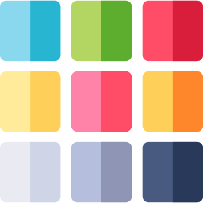
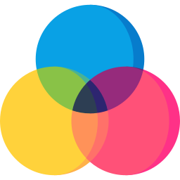
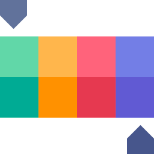

<div class="side-nav-content">
    <ul class="nav-list" [ngClass]="{'nav-list-open':menuStatus}">
        <li class="nav-list-item" style="color: #ffffff;" [routerLink]="''">
            
            <span><a>Color Palette</a></span>
        </li>

        <li class="nav-list-item" style="color: #ffffff;" [routerLink]="'solidColors'">
            
            <span><a>Solid Colors</a></span>
        </li>

        <li class="nav-list-item" style="color: #ffffff;" [routerLink]="'gradientColors'">
            
            <span><a>Gradients</a></span>
        </li>

        <li class="nav-list-item" style="color: #ffffff;">
            
            <span><a href="#">Brand Colors</a></span>
        </li>

        <li  *ngIf="menuStatus" class="nav-list-item close" style="color: #ffffff;" (click)="sidenavToggle()">
            
            <span><a>Close Sidenav</a></span>
        </li>
        <li *ngIf="!menuStatus" [ngClass]="{'hideToggleButton': !isScreenLarge}" class="nav-list-item open" style="color: #ffffff;" (click)="sidenavToggle()">
            
            <span><a>Open Sidenav</a></span>
        </li>
    </ul>
</div>